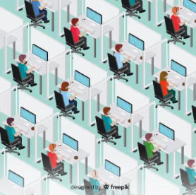

문화는 한 집단의 정체성이자 나아갈 방향을 지탱하는 보이지 않는 힘입니다.
어떤 일을 우선으로 생각하고, 어떻게 문제를 해결하며, 서로를 어떻게 대하는지와 같은
'우리다움' 그 자체이기 때문입니다.
그러나 이렇게 중요한 문화도 조직의 성장이나 시대의 흐름과 같은 환경에 따라 끊임없이 변해야만 그 생명력을 유지할 수 있습니다.
이번 코너에서는 변화와 재정비 시점에 서 있는 신보그룹이 앞으로 어떤 조직문화의 방향을 선택해야 하는지, 그리고 더 나아가 그 안에서 ‘내가 실천할 수 있는 문화는 무엇’이 있을지 함께 살펴보겠습니다.
신보그룹의 조직문화, ‘변화’ 앞에 서다
우리가 이야기할 '신보의 문화'란 무엇일까요? 지난 50년간 회사를 성장시키고, 위기의 순간마다 우리를 단단하게 묶어준 보이지 않는 힘이었습니다.
구체적으로 우리의 문화는 다음과 같은 역할을 해왔습니다.
→ 우리의 조직문화는
- ‘신보인’이라는 정체성을 만들어주고
- 우리가 나아가야 할 ‘미래의 방향성’을 제시해주며
- 임직원에게는 일에 대한 동기부여와 문제해결 방법을
- 기업에게는 지속가능한 성장의 원동력이며 경쟁력이 되고 있습니다.
→ 하지만, 우리의 조직문화는 이제 변해야 합니다.
문화는 환경의 변화와 구성원들의 세대 교체, 조직의 전략과 목표의 변화 등의 여러 요인으로 인해 자연스럽게 변하게 됩니다.
이런 변화에 따라가지 않는다면, 오히려 낡은 문화로 자리잡아 ‘걸림돌’이 될 수도 있습니다.
그렇다면, 신보의 조직문화는 어떤 변화를 선택해야 할까요?
답은 '소통'에서 찾을 수 있습니다.
'소통', 신보 조직문화의 기준
신보의 조직문화는 구성원이 어떻게 일하고, 어떻게 판단하며, 어떻게 협업할 것인지에 대한 기준을 제시하고 있습니다. 이 기준은 ‘일하는 방식’에서 출발하며, 기준의 중심에는 ‘소통’이 있습니다
'업'의 특성에 기반한 소통
신보의 업의 특성을 보면 ‘소통’이 중심에 있는 것을 확인할 수 있습니다.

이러한 업무 환경에선 ‘누가, 왜 무엇을 하는지’ 모르고는 판단도, 협업도 불가능합니다.
또한, 신보는 신뢰 기반 자율 경영을 추구하기 때문에, 정직한 소통에 기반한 경영이 요구됩니다.
그래서 우리에게 ‘소통’은 선택이 아니라, 일의 전제가 됩니다.
신보그룹의 '소통'은 우리의 '일하는 방식'을 말하며,
'우리다움의 소통'이 잘 된다는 것은,'일 잘하는 소통'
이 되고 있다는 것을 의미합니다.이런 행동은 시간이 쌓이면서 '신보그룹의 문화'를 만들고, 그 문화가 기업의 지속가능한 성장의 '경쟁력'
빠른 성장 속 변화에 대응하지 못한 ‘소통’
→ 빠르게 성장했던 신보는 과거엔 유기적이고 빠른 소통이 큰 강점이었습니다.
- 소규모 조직, 복수 역할 수행
- 대화 중심의 빠른 공유와 의사결정(비공식적 대화)
- 개인적, 집단적 유대 중심
이러한 소통의 특징은 다음과 같은 이점이 있었습니다.
5~6명 정도의 소규모 조직에서는 '소통'의 속도가 빨랐고, 상호 이해도가 높았습니다.
또한, 각자 맡은 업무의 영역이 다양해서 업에 대한 이해도가 높았습니다. '업에 대한 강한 이해'는 업무적 소통에 있어 '신속한 일처리', '빠른 의사결정'의 이점을 보였습니다.
경력이 오래될 수록, 직원간의 유대관계가 깊을 수록 보여지는 모습입니다.
하지만 지금, 우리는 새로운 환경에 서 있습니다.
조직의 규모와 복잡성은 과거와 달라졌습니다.
이제는 그 소통의 강점을 이어가면서, 변화에 맞는 방식으로 발전시켜야 할 시점입니다.
→기업의 성장과 함께 찾아온 새로운 환경
- 대규모 조직, 전문성 중심
- 공식적 절차 요구 증가
- 공정성과 기준의 명확화 필요
규모가 커지면 효율적 관리를 위해 업무 시스템이 더 체계화되고, 세분화되며 복잡하게 나타납니다.
'소통'또한 체계적 의사결정 시스템에 따르게 되면서, 보고 체계의 복잡함으로 '보고 기피'의 문제를 야기할 수 있습니다.
보고의 기피는 소통의 누락으로 이어집니다.
어떤 문화를 선택하든 이것을 현실화, 행동화 하는데에는 '딜레마'가 나타나기 마련입니다.
우리가 마주한 '소통의 현실'
’소통’이 조직의 성장에 중요한 점은 분명합니다.
하지만 현실의 딜레마를 해결하지 못한 채 반복되는 소통은, 결국 이상론에 그치고 맙니다.

그렇다면 우리가 현장에서 흔히 부딪히는 소통의 딜레마는 어떤 모습일까요? 실제 사례를 통해 살펴보겠습니다.
현실의 딜레마1
“강한 유대감 구두 소통” vs. “공식 절차 소통”
상황
김 팀장은 15년 경력의 현장 전문가로, 현장 상황에 바로 대응하는 데 익숙합니다. 오랜 시간 함께한 동료들과 직접 소통하며 문제를 해결해왔기 때문에, 구두나 전화 한 통으로 빠르게 해결하는 것이 습관이자 강점입니다.
한편, 이 대리는 입사 1년 차로, 신입사원 교육 과정에서 공식 절차와 문서화의 중요성을 배웠고, 모든 일처리는 기록되고 투명하게 관리되어야 한다고 생각합니다.
최근 공정 지연으로 현장에 긴급 문제가 생기자, 김 팀장은 예전처럼 바로 담당자에게 전화해 빠르게 처리하려 하지만, 이 대리는 공식 시스템에 문제를 접수해 정해진 절차대로 처리하자고 맞섭니다.
🅐선택
김 팀장 방식 - 구두 소통 중심의 즉각 대응
- 즉각적인 문제 해결 가능
- 그러나 기록이 남지 않아 추후 책임 소재 불명확
🅑선택
이 대리 방식 - 공식 절차에 따른 문제 접수 및 처리
- 절차적 투명성 확보
- 처리 지연으로 현장 대응 늦어질 수 있음
신보그룹 소통 지침
- ‘소통’은 신속성과 체계성의 균형을 지향합니다.
- 긴급 상황에서 신속한 대응은 필수이나, 책임 소재와 문제 재발 방지를 위해 공식 절차와 기록을 병행해야 합니다.
- 현장 중심 구두 소통은 초기 대응에 활용하되, 반드시 후속으로 공식 보고 체계를 통해 상황을 공유하고 기록해야 합니다.
- 모두가 이해하는 통일된 소통 프로세스를 준수하며, 현장과 본사가 신뢰를 바탕으로 협력해야 합니다.
현실의 딜레마2
정보 공유: "비공식 소통" vs. "공식 채널"
상황
팀 내 중요한 일정과 변경사항 대부분이 공식 이메일보다는 점심시간 대화나 업무 중 짧은 구두 대화로 전달되고 있습니다.
신입사원은 이런 비공식 대화에 참여할 기회가 적어, 공식 이메일만으로는 업무 정보를 모두 파악하기 어려운 상황입니다.
그런데 팀에서는 "원래그래" 식으로 이 비공식 소통 방식이 너무 자연스럽습니다.
🅐선택
신입사원이 공식 채널만으로 업무 소통을 하려 노력하지만, 필요한 정보를 놓치고 업무에 차질이 생깁니다.
🅑선택
팀원들이 신입사원을 비공식 대화에 더 자주 초대하도록 독려해 자연스러운 소통에 참여하게 만듭니다.
핵심 질문
공식 소통 체계가 모두의 정보를 공유하는 데 충분하지 않은 상황에서, 어떻게 해야 모두가 원활하게 소통할 수 있을까요?
신보그룹 소통 지침
- 공식 채널을 기본으로 하되, 비공식 소통의 존재와 중요성을 인정합니다.
- 신규 구성원이 소통 방식에 빠르게 적응할 수 있도록 비공식 채널 참여 기회를 적극 제공합니다.
- 업무 관련 핵심 정보는 공식 문서나 이메일로 반드시 공유해 정보 격차를 최소화합니다.
딜레마에 대한 신보의 기준
신보의 ‘소통’은 우리가 현장에서 마주하는 딜레마에 대해, 문화적 기준에 따라 선택의 방향을 명확히 제시하고 있습니다.
신보의 기준 1: ‘즉시성’과 ‘체계성’의 조화
앞서 살펴본 '긴급 대응'과 '정보 공유' 딜레마는 모두 ‘업의 즉시성과 현장성’이라는 특성과 ‘체계적 책임’ 사이의 충돌입니다.
해법: 공식 절차를 통한 체계적 소통
긴급 상황이라도 공식 시스템에 접수하고 절차에 따라 처리하는 것을 원칙으로 합니다. 핵심 정보는 반드시 공식 채널을 통해 모든 관계자가 공유해야 합니다.
✔️ 장점: 처리 시간이 다소 지연될 수 있더라도, 체계적인 데이터 축적, 책임 소재 명확화, 절차적 투명성을 확보하는 것이 업의 특성에 궁극적으로 부합합니다.
❌ 피해야 할 행동: 과거의 ‘빠르고 편한’ 비공식 소통에만 의존하는 것은 공식 기록 누락, 책임 회피, 부서 간 조율 부족 등 더 큰 조직의 비효율을 초래할 수 있습니다.
신보의 기준 2: ‘정직한 소통’을 통한 신뢰 기반 경영
소통의 딜레마는 절차에만 있는 것이 아닙니다. 개인적인 관계와 조직의 성과가 충돌할 때, 우리는 '정직하고 당당한 소통'이라는 기준을 따라야 합니다.
해법: 공정하고 솔직한 피드백
개인적인 친분을 넘어 업무의 객관성과 공정성을 최우선으로 삼고, 팀원의 역량 부족이나 문제에 대해 공식적인 피드백을 제공하고 필요한 개선 조치를 취합니다.
✔️ 장점: 이것이 단기적으로는 불편할 수 있으나, 장기적으로는 팀원의 성장을 돕고 회사의 이익을 지키는 길이며, 신보의 핵심 소통 문화를 실현하는 유일한 방법입니다.
❌ 피해야 할 행동: 개인적 유대 관계를 우선하여 문제를 덮어두는 것은 당장의 갈등은 피하게 해주지만, 결국 팀의 성과를 저하하고 공정성 문제를 야기하며 조직의 신뢰를 무너뜨리게 됩니다.
신보가 말하는 소통의 문화가 조직 안에서 분명히 드러나지 않는 이유는, '과거의 익숙한 방식'과 '새로운 기준' 사이에서 머뭇거리고 있기 때문입니다.
이제는 '선택'해야 할 때
과거의 소통 방식은 잘못된 것이 아니었습니다.
하지만 지금은 달라졌습니다. 조직은 커졌고, 책임도 커졌습니다. 과거의 강점을 이어가되, 지금의 환경에 맞게 기준과 방식을 새롭게 해야 합니다.
이제는 그때의 강점을 살리되, 지금의 기준에 맞게 업그레이드된 방식이 필요합니다.
새로운 방식이란 과거의 좋은 점을 버리는 것이 아닌, 그 위에 현재의 원칙을 더해 함께 발전시키는 것을 의미합니다.
우리가 택해야 할 건:
- 과거의 강점을 살리는 유연함
- 지금의 환경에 맞춘 체계적인 기준
- 투명하고 책임감 있는 소통 절차
- 자율과 신뢰를 유지하기 위한 공정한 피드백
조직이 성장하면 문화도 달라져야 합니다
무엇보다, 경영진의 솔선수범이 필요하고, 구성원 모두의 일상 속 실천이 필요합니다.
“결국, 문화를 만드는 것은 사람이다.”
– 셰릴 샌드버그 (Sheryl Sandberg)